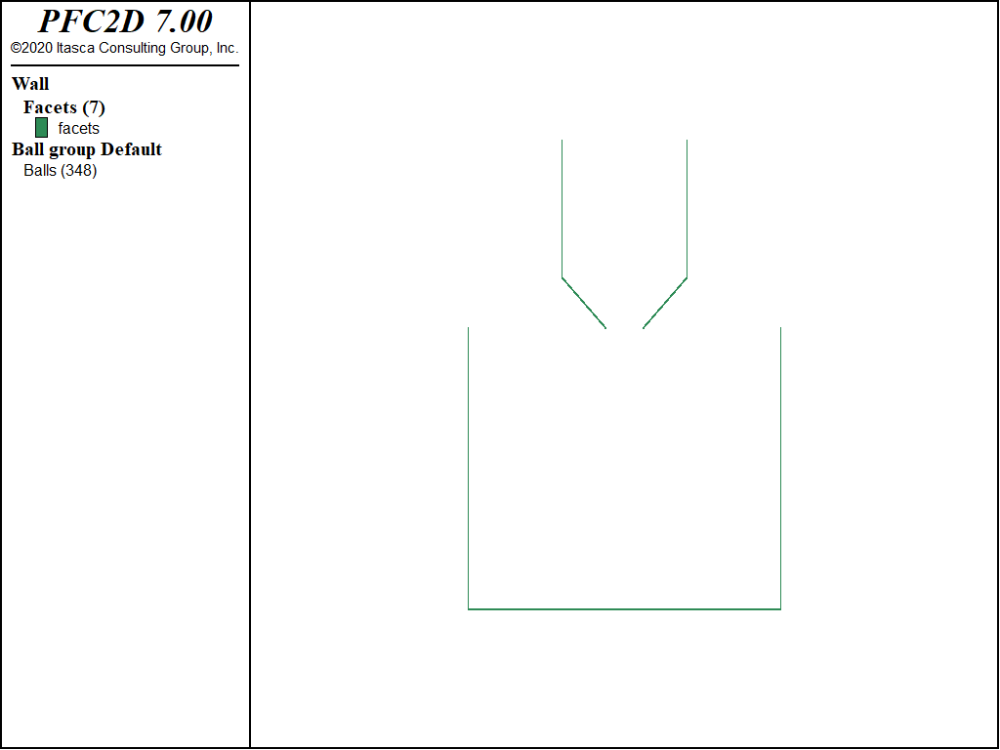
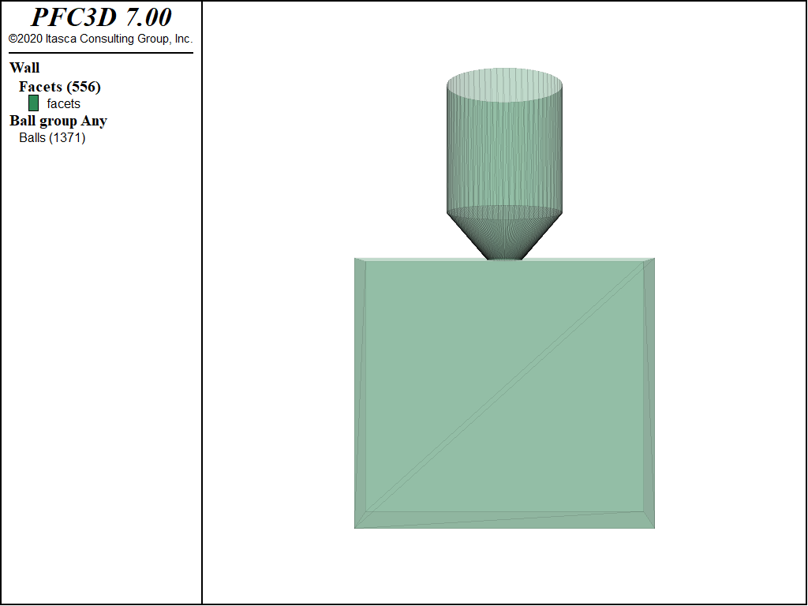
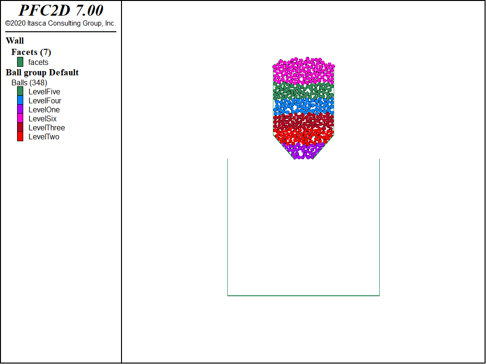
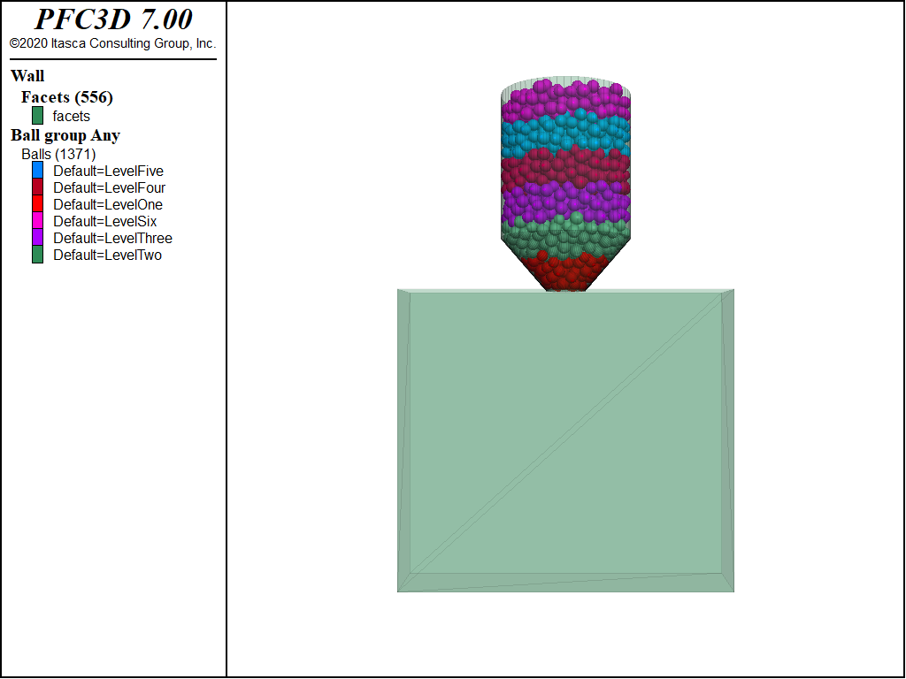
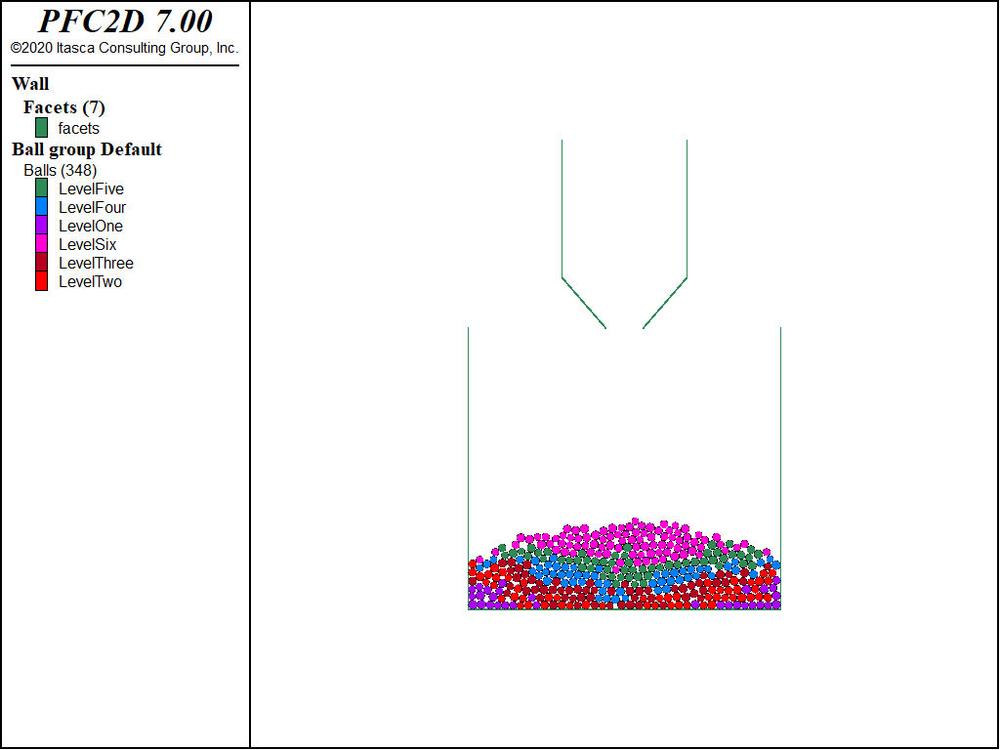
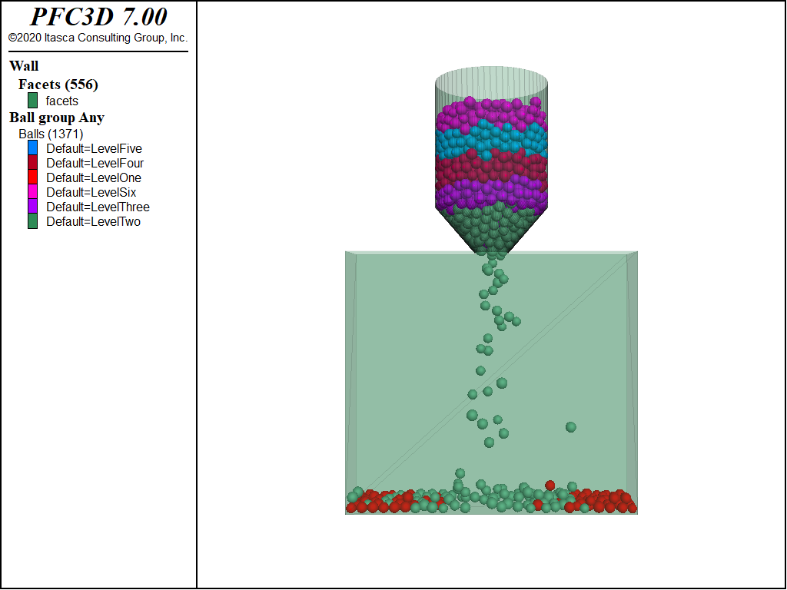

料斗卸料
引言
注意
本算例的项目文件可在 PFC 中查看或运行。[1]所用的数据文件（data files）列于本算例末尾。
文中给出了进行料斗卸料模拟的步骤。讨论以 PFC3D 模型为重点，但也适用于 PFC2D。文中展示了两种模型的图。本教程有意保持简单；更高级的算例在 料斗流动（hopper flow） 示例应用中讨论，其中研究了装料高度和摩擦对卸料速率的影响。
数值模型
料斗的二维和三维几何形状如下所示。


图 1：二维料斗几何形状。


图 2：三维料斗几何形状。
FISH 函数 几何（geometry） 指定料斗的尺寸。计算域依据这些尺寸创建，并将域条件设置为销毁移出计算域范围的球颗粒（详情请参阅 设置模型域命令（model domain） 命令）。
model new
model large-strain on
model title 'Simple hopper discharge model'
fish define geometry
W = 20.0
W0 = 6.0
Theta = 30
H = 30.0
A = (W-W0)*math.tan(Theta*math.pi/180)
end
[geometry]
model domain extent ([-W*1.5],[W*1.5]) ([-W*1.5],[W*1.5]) ([-H*2],[H*2])
model domain condition destroy
料斗的几何形状使用 wall generate 命令创建圆锥形和圆柱形墙体。
对于圆柱体，需要给出底面的中心位置、半径和高度。控制圆柱体端部是否封闭的 cap 关键字，其两端均设置为 假值（false）。需要指定圆锥台顶面和底面的高度以及最小和最大半径。最小半径为 0 时生成圆锥。对于圆锥，设置 cap 关键字，使圆锥的底端封闭而顶端保持开口。
wall generate id 1 cylinder base (0.0,0.0,[A]) ...
height [H-A] radius [W*0.5] ...
cap false false one-wall
wall generate id 2 cone radius [W0*0.5] [W*0.5] height [A] cap true false
接触模型分配表（CMAT）（Contact Model Assignment Table (CMAT)） 的默认槽位是针对 ball-ball 和 ball-facet 接触类型设置的。两个槽位均填入 线性接触模型（linear contact model），但属性不同。ball-ball 接触和 ball-facet 接触均具有法向黏性阻尼。
contact cmat default type ball-ball model linear ...
property kn 5e7 ks 5e7 fric 0.577 dp_nratio 0.2
contact cmat default type ball-facet model linear ...
property kn 1e8 ks 1e8 fric 0.1 dp_nratio 0.2
在料斗上方生成一团相互重叠的球颗粒。使用 ball attribute 命令设置球颗粒的密度和局部阻尼系数。局部阻尼被临时设置为一个较大的值，使球颗粒能更快地沉入料斗中。
model random 10001
ball distribute porosity 0.5 box ([-W*0.35],[W*0.35]) ...
([-W*0.35],[W*0.35]) ...
([A],[1.8*H]) radius 0.8 1.0
ball attribute density 1000.0 damp 0.7
发出 模型力学时步缩放（model mechanical timestep scale） 命令以初步启用密度缩放，从而快速达到初始平衡。初始化重力，并使用 求解模型（model solve） 命令将模型求解至目标平均比值为 1e-3。
请注意，最初使用了带 calm 关键字的 执行计算时步（model cycle） 命令，以消除由使用 ball distribute 命令产生的大重叠所引起的动能。在本例中，每 50 个循环将球颗粒的平动速度和转动速度均设置为 0。
model gravity 0 0 -9.81
model cycle 1000 calm 50
model mechanical timestep scale
model solve ratio-average 1e-3
根据球颗粒的初始高度生成六组球颗粒。这有助于评估料斗卸料过程中的流动模式。球体（ball） 绘图项按文本值 group 着色，以便将该分组可视化。生成一个长方体箱以收集从料斗流出的球颗粒，并移除箱体顶部。
ball delete range cylinder end-1 (0.0,0.0,0.0) ...
end-2 (0.0,0.0,[H]) ...
radius 0.0 [W*0.5] not
ball group 'LevelOne' range position-z 0.0 [H/6]
ball group 'LevelTwo' range position-z [H/6][2*H/6]
ball group 'LevelThree' range position-z [2*H/6][3*H/6]
ball group 'LevelFour' range position-z [3*H/6][4*H/6]
ball group 'LevelFive' range position-z [4*H/6][5*H/6]
ball group 'LevelSix' range position-z [5*H/6][H*2]
wall delete range position-z 0.0 set id 2
wall generate id 200 box ([-W*1.25],[W*1.25]) ...
([-W*0.25],[W*0.25]) ...
([-H*1.5],0.0)
wall delete range set id 201
以下各图显示卸料前料斗中达到平衡的球颗粒。


图 3：卸料前的 2D 系统。


图 4：卸料前的 3D 系统。
在从料斗卸出颗粒之前，将局部阻尼设置为 0，将时步计算模式设置为 auto（见 模型力学时步（model mechanical timestep） 命令），并重置力学时龄。随后将模型求解至目标时间。卸料过程中系统的快照如下所示。
ball attribute damp 0.0
model mechanical timestep auto
model mech time-total 0.0


图 5：卸料过程中 2D 系统的快照。


图 6：卸料过程中 3D 系统的快照。
请注意在卸出球颗粒之前使用了 设置球体结果输出（ball results） 命令。结果逻辑提供了定期记录精简模型状态以便进行后处理的能力。这些精简状态既可以保存在内存中，也可以输出为二进制文件。在本例中，除球颗粒的位置/半径外，还记录它们的分组标识符和速度。模拟完成后可以执行 生成影片（makeMovie） 函数（见下文），以依次加载球颗粒结果并将绘图视图导出为位图文件。同时还修改了绘图视图设置（见 c 绘图（plot） 命令）以移动相机位置。随后可使用第三方工具基于导出的位图制作料斗卸料的影片。
fish define makeMovie(dur,inc,name)
i = 0
curv = inc
dur = dur
namefile = name
loop while (curv <= dur)
i = i + 1
dist = 150.0/(i*0.01)
if dist > 150.0
dist = 150.0
endif
local fname = string.build('%1_%2.png',name,i)
command
model result import [i] skip-fish
;plot export bitmap filename [fname]
endcommand
curv = curv + inc
endloop
end
讨论
本教程演示如何使用 wall generate 命令创建简单的料斗几何体。该命令可生成若干简单的墙几何体。使用 模型力学时步缩放（model mechanical timestep scale） 命令填充料斗并使球颗粒达到平衡。随后定义分组，并让球颗粒从料斗中流出。对于此类动力问题，球颗粒（设置球体结果输出（ball results））、刚性簇（clump results）和墙（wall results）的结果逻辑可极大地方便其后处理可视化。
数据文件
Hopper.dat (3D)
; 文件名：Hopper.dat (3D)
;=========================================================================
; excerpt-jdkv-start
model new
model large-strain on
model title 'Simple hopper discharge model'
fish define geometry
W = 20.0
W0 = 6.0
Theta = 30
H = 30.0
A = (W-W0)*math.tan(Theta*math.pi/180)
end
[geometry]
model domain extent ([-W*1.5],[W*1.5]) ([-W*1.5],[W*1.5]) ([-H*2],[H*2])
model domain condition destroy
; excerpt-jdkv-end
; excerpt-xzvv-start
wall generate id 1 cylinder base (0.0,0.0,[A]) ...
height [H-A] radius [W*0.5] ...
cap false false one-wall
wall generate id 2 cone radius [W0*0.5] [W*0.5] height [A] cap true false
; excerpt-xzvv-end
; excerpt-opbl-start
contact cmat default type ball-ball model linear ...
property kn 5e7 ks 5e7 fric 0.577 dp_nratio 0.2
contact cmat default type ball-facet model linear ...
property kn 1e8 ks 1e8 fric 0.1 dp_nratio 0.2
; excerpt-opbl-end
; excerpt-bfck-start
model random 10001
ball distribute porosity 0.5 box ([-W*0.35],[W*0.35]) ...
([-W*0.35],[W*0.35]) ...
([A],[1.8*H]) radius 0.8 1.0
ball attribute density 1000.0 damp 0.7
; excerpt-bfck-end
; excerpt-pgnz-start
model gravity 0 0 -9.81
model cycle 1000 calm 50
model mechanical timestep scale
model solve ratio-average 1e-3
; excerpt-pgnz-end
; excerpt-hiej-start
ball delete range cylinder end-1 (0.0,0.0,0.0) ...
end-2 (0.0,0.0,[H]) ...
radius 0.0 [W*0.5] not
ball group 'LevelOne' range position-z 0.0 [H/6]
ball group 'LevelTwo' range position-z [H/6][2*H/6]
ball group 'LevelThree' range position-z [2*H/6][3*H/6]
ball group 'LevelFour' range position-z [3*H/6][4*H/6]
ball group 'LevelFive' range position-z [4*H/6][5*H/6]
ball group 'LevelSix' range position-z [5*H/6][H*2]
wall delete range position-z 0.0 set id 2
wall generate id 200 box ([-W*1.25],[W*1.25]) ...
([-W*0.25],[W*0.25]) ...
([-H*1.5],0.0)
wall delete range set id 201
; excerpt-hiej-end
model save 'initial'
; excerpt-gbrq-start
fish define makeMovie(dur,inc,name)
i = 0
curv = inc
dur = dur
namefile = name
loop while (curv <= dur)
i = i + 1
dist = 150.0/(i*0.01)
if dist > 150.0
dist = 150.0
endif
local fname = string.build('%1_%2.png',name,i)
command
model result import [i] skip-fish
;plot export bitmap filename [fname]
endcommand
curv = curv + inc
endloop
end
; excerpt-gbrq-end
; excerpt-bhin-start
ball attribute damp 0.0
model mechanical timestep auto
model mech time-total 0.0
; excerpt-bhin-end
model results interval mechanical 0.04
wall results active on
ball results active true add-attribute velocity
model solve time 15.0
model save 'final'
;[makeMovie(15,0.04,'test')]
program return
;=========================================================================
; 文件结束：Hopper.dat (3D)
Hopper.dat (2D)
; 文件名：hopper.dat (2D)
;
; 简单料斗卸料教程
;=========================================================================
model new
model large-strain on
fish define geometry
W = 20.0
W0 = 6.0
Theta = 30
H = 30.0
A = (W-W0)*math.tan(Theta*math.pi/180)
end
[geometry]
model domain extent ([-W*1.5],[W*1.5])([-H*2],[H*2.5])
model domain condition destroy
wall create id 1 vertices ([-W0*0.5],0.0) ([-W*0.5],[A])
wall create id 2 vertices ([W0*0.5],0.0) ([W*0.5],[A])
wall create id 3 vertices ([-W0*0.5],0.0) ([W0*0.5],0.0)
wall create id 4 vertices ([-W*0.5],[A]) ([-W*0.5],[H])
wall create id 5 vertices ([W*0.5],[A]) ([W*0.5],[H])
contact cmat default type ball-ball model linear ...
property kn 1e7 ks 1e7 fric 0.577 dp_nratio 0.3
contact cmat default type ball-facet model linear ...
property kn 1e8 ks 1e8 fric 0.1 dp_nratio 0.3
model random 10001
ball distribute porosity 0.5 box ([-W*0.5],[W*0.5]) ...
([A],[2.0*H]) radius 0.6 0.75
ball attribute density 2000
model cycle 1000 calm 50
model cycle 2000
model mechanical timestep scale
model gravity 0 -9.81
ball delete range position-x [W*0.5] 100
ball delete range position-x -100 [-W*0.5]
model solve ratio-average 1e-4
ball delete range position-y -100 0
model orientation-tracking on
model save 'Hopper2D'
ball group 'LevelOne' range position-y 0.0 [H/6]
ball group 'LevelTwo' range position-y [H/6][2*H/6]
ball group 'LevelThree' range position-y [2*H/6][3*H/6]
ball group 'LevelFour' range position-y [3*H/6][4*H/6]
ball group 'LevelFive' range position-y [4*H/6][5*H/6]
ball group 'LevelSix' range position-y [5*H/6][H*1.5]
wall generate id 200 box ([-W*1.25],[W*1.25]) ([-H*1.5],0.0)
wall delete range set id 202
wall delete range set id 3
model mechanical time-total 0.0
model result interval mechanical 0.2 warn off
ball result active on add-attribute velocity add-attribute group
wall result active on
model mechanical timestep auto
fish define replay(name,plot)
rmap = map(0,0)
map.remove(rmap,0)
command
model results map rmap
endcommand
local rsize = map.size(rmap)
local rkeys = map.keys(rmap)
loop foreach local k rkeys
local iname = map.value(rmap,k)
local oname = string.build('%1_t%2.png',name,k)
command
model result import [iname] skip-fish
endcommand
if plot = true
command
plot bitmap plot 'the system' filename [oname]
endcommand
endif
endloop
end
model solve time 25.0
model save 'final'
[replay('test',false)]
;[replay('test',true)]
program return
;=========================================================================
; 文件结束：hopper.dat (2D)
尾注
| [1] | 要在 PFC 中查看本项目，请使用程序菜单。
⮡ PFC |
| 这些内容对您有帮助吗？… | FLAC3D © 2019, Itasca | 原文更新于 2020 年 10 月 8 日 |
| 版权与免责声明 | ||